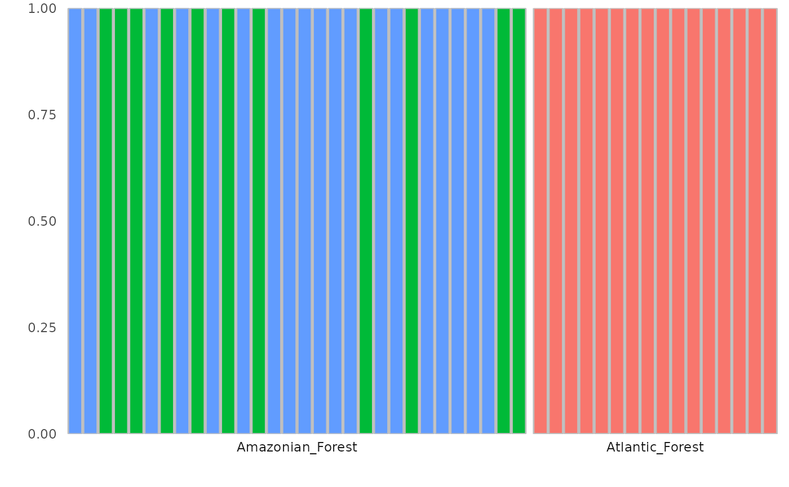
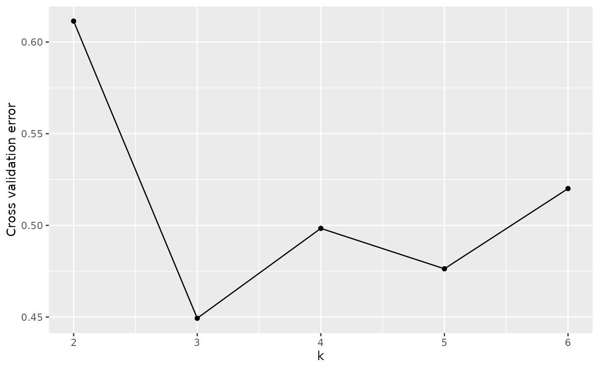
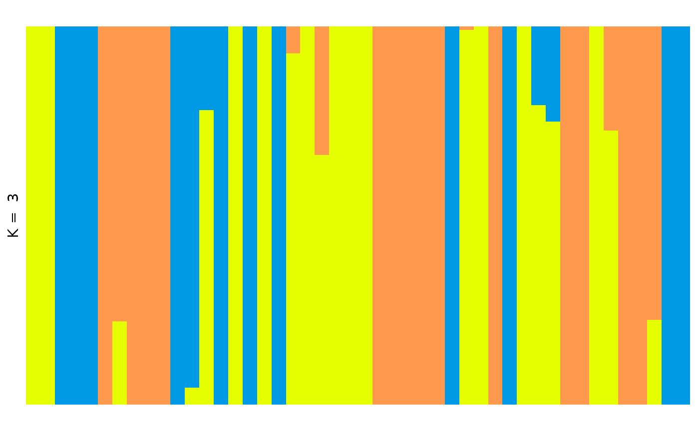
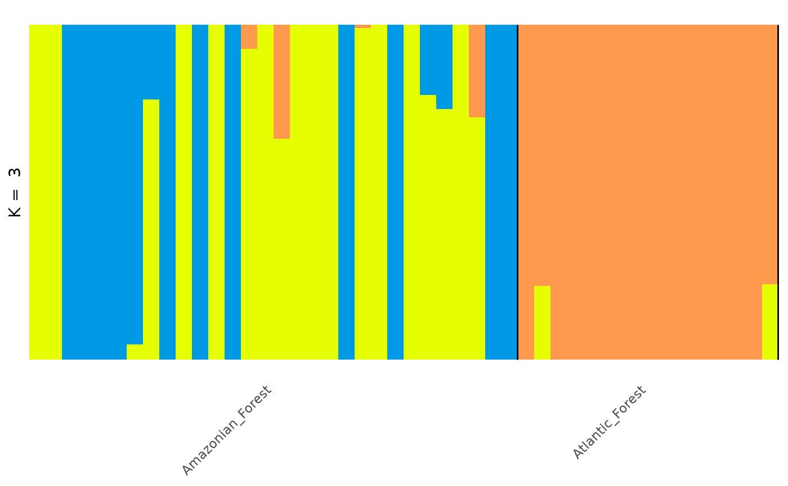

Population genetic analysis with tidypopgen
Source:vignettes/a03_example_clustering_and_dapc.Rmd
a03_example_clustering_and_dapc.RmdAn example workflow with real data
We will explore the genetic structure of Anolis punctatus in South America, using data from Prates et al 2018. We downloaded the vcf file of the genotypes from “https://github.com/ivanprates/2018_Anolis_EcolEvol/blob/master/data/VCFtools_SNMF_punctatus_t70_s10_n46/punctatus_t70_s10_n46_filtered.recode.vcf?raw=true” and compressed it to a vcf.gz file.
We read in the data from the compressed vcf with:
library(tidypopgen)
#> Loading required package: dplyr
#>
#> Attaching package: 'dplyr'
#> The following objects are masked from 'package:stats':
#>
#> filter, lag
#> The following objects are masked from 'package:base':
#>
#> intersect, setdiff, setequal, union
#> Loading required package: tibble
vcf_path <-
system.file("/extdata/anolis/punctatus_t70_s10_n46_filtered.recode.vcf.gz",
package = "tidypopgen"
)
anole_gt <-
gen_tibble(vcf_path, quiet = TRUE, backingfile = tempfile("anolis_"))Now let’s inspect our gen_tibble:
anole_gt
#> # A gen_tibble: 3249 loci
#> # A tibble: 46 × 2
#> id genotypes
#> <chr> <vctr_SNP>
#> 1 punc_BM288 1
#> 2 punc_GN71 2
#> 3 punc_H1907 3
#> 4 punc_H1911 4
#> 5 punc_H2546 5
#> 6 punc_IBSPCRIB0361 6
#> 7 punc_ICST764 7
#> 8 punc_JFT459 8
#> 9 punc_JFT773 9
#> 10 punc_LG1299 10
#> # ℹ 36 more rowsWe can see that we have 46 individuals, from 3249 loci. Note that we don’t have any information on population from the vcf. That information can be found from another csv file. We will have add the population information manually. Let’s start by reading the file:
pops_path <- system.file("/extdata/anolis/punctatus_n46_meta.csv",
package = "tidypopgen"
)
pops <- readr::read_csv(pops_path)
#> Rows: 46 Columns: 5
#> ── Column specification ────────────────────────────────────────────────────────
#> Delimiter: ","
#> chr (3): id, population, pop
#> dbl (2): longitude, latitude
#>
#> ℹ Use `spec()` to retrieve the full column specification for this data.
#> ℹ Specify the column types or set `show_col_types = FALSE` to quiet this message.
pops
#> # A tibble: 46 × 5
#> id population longitude latitude pop
#> <chr> <chr> <dbl> <dbl> <chr>
#> 1 punc_BM288 Amazonian_Forest -51.8 -3.32 Eam
#> 2 punc_GN71 Amazonian_Forest -54.6 -9.73 Eam
#> 3 punc_H1907 Amazonian_Forest -64.8 -9.45 Wam
#> 4 punc_H1911 Amazonian_Forest -64.8 -9.44 Wam
#> 5 punc_H2546 Amazonian_Forest -65.4 -9.60 Wam
#> 6 punc_IBSPCRIB0361 Atlantic_Forest -46.0 -23.8 AF
#> 7 punc_ICST764 Atlantic_Forest -36.3 -9.81 AF
#> 8 punc_JFT459 Atlantic_Forest -40.5 -20.3 AF
#> 9 punc_JFT773 Atlantic_Forest -40.5 -20.0 AF
#> 10 punc_LG1299 Atlantic_Forest -39.1 -15.3 AF
#> # ℹ 36 more rowsWe can now attempt to join the tables. We recommend using a
left_join to do so, rather than cbind or
bind_cols, as the latter functions assume that the two
tables are in the same order. In this case, we do not want to bring over
the wrong data due to mismatched ordering.
Let us check that we have been successful:
anole_gt %>% glimpse()
#> Rows: 46
#> Columns: 6
#> A tibble: 46 × 6
#> $ id <chr> "punc_BM288", "punc_GN71", "punc_H1907", "punc_H1911", "pun…
#> $ genotypes <vctr_SNP> 1, 2, 3, 4, 5, 6, 7, 8, 9, 10, 11, 12, 13, 14, 15, 16,…
#> $ population <chr> "Amazonian_Forest", "Amazonian_Forest", "Amazonian_Forest",…
#> $ longitude <dbl> -51.8448, -54.6064, -64.8247, -64.8203, -65.3576, -46.0247,…
#> $ latitude <dbl> -3.3228, -9.7307, -9.4459, -9.4358, -9.5979, -23.7564, -9.8…
#> $ pop <chr> "Eam", "Eam", "Wam", "Wam", "Wam", "AF", "AF", "AF", "AF", …Map
Lets begin by visualising our samples geographically. We have
latitudes and longitudes in our tibble; we can transform them into an
sf geometry with the function gt_add_sf().
Once we have done that, our gen_tibble will act as an
sf object, which can be plotted with
ggplot2.
anole_gt <- gt_add_sf(anole_gt, c("longitude", "latitude"))
anole_gt
#> Simple feature collection with 46 features and 6 fields
#> Geometry type: POINT
#> Dimension: XY
#> Bounding box: xmin: -75.8069 ymin: -23.7564 xmax: -35.7099 ymax: 4.4621
#> Geodetic CRS: WGS 84
#> # A gen_tibble: 3249 loci
#> # A tibble: 46 × 7
#> id genotypes population longitude latitude pop geometry
#> <chr> <vctr_SN> <chr> <dbl> <dbl> <chr> <POINT [°]>
#> 1 punc… 1 Amazonian… -51.8 -3.32 Eam (-51.8448 -3.3228)
#> 2 punc… 2 Amazonian… -54.6 -9.73 Eam (-54.6064 -9.7307)
#> 3 punc… 3 Amazonian… -64.8 -9.45 Wam (-64.8247 -9.4459)
#> 4 punc… 4 Amazonian… -64.8 -9.44 Wam (-64.8203 -9.4358)
#> 5 punc… 5 Amazonian… -65.4 -9.60 Wam (-65.3576 -9.5979)
#> 6 punc… 6 Atlantic_… -46.0 -23.8 AF (-46.0247 -23.7564)
#> 7 punc… 7 Atlantic_… -36.3 -9.81 AF (-36.2838 -9.8092)
#> 8 punc… 8 Atlantic_… -40.5 -20.3 AF (-40.5219 -20.2811)
#> 9 punc… 9 Atlantic_… -40.5 -20.0 AF (-40.52 -19.96)
#> 10 punc… 10 Atlantic_… -39.1 -15.3 AF (-39.0694 -15.2696)
#> # ℹ 36 more rowsTo visualise our samples, we can create a map of South America using
the rnaturalearth package. We will use the
ne_countries() function to get the countries in South
America. We will then plot the map and add our samples using the
geom_sf() function from ggplot2.
library(rnaturalearth)
library(ggplot2)
map <- ne_countries(
continent = "South America",
type = "map_units", scale = "medium"
)
ggplot() +
geom_sf(data = map) +
geom_sf(data = anole_gt$geometry) +
coord_sf(
xlim = c(-85, -30),
ylim = c(-30, 15)
) +
theme_minimal()From our map we can see that we have samples from the coastal Atlantic Forest and the Amazonian Forest.
PCA
That was easy. The loci had already been filtered and cleaned, so we don’t need to do any QC. Let us jump straight into analysis and run a PCA:
anole_pca <- anole_gt %>% gt_pca_partialSVD(k = 30)
#> Error: You can't have missing values in 'X'.OK, we jumped too quickly. There are missing data, and we need first to impute them:
anole_gt <- gt_impute_simple(anole_gt, method = "mode")And now:
anole_pca <- anole_gt %>% gt_pca_partialSVD(k = 30)Let us look at the object:
anole_pca
#> === PCA of gen_tibble object ===
#> Method: [1] "partialSVD"
#>
#> Call ($call):gt_pca_partialSVD(x = ., k = 30)
#>
#> Eigenvalues ($d):
#> 351.891 192.527 113.562 104.427 87.615 83.476 ...
#>
#> Principal component scores ($u):
#> matrix with 46 rows (individuals) and 30 columns (axes)
#>
#> Loadings (Principal axes) ($v):
#> matrix with 3249 rows (SNPs) and 30 columns (axes)The print function (implicitly called when we type the
name of the object) gives us information about the most important
elements in the object (and the names of the elements in which they are
stored).
We can extract those elements with the tidy function,
which returns a tibble that can be easily used for further analysis,
e.g.:
tidy(anole_pca, matrix = "eigenvalues")
#> # A tibble: 30 × 4
#> PC std.dev percent cumulative
#> <int> <dbl> <dbl> <dbl>
#> 1 1 52.5 45.9 45.9
#> 2 2 28.7 13.7 59.7
#> 3 3 16.9 4.78 64.5
#> 4 4 15.6 4.05 68.5
#> 5 5 13.1 2.85 71.4
#> 6 6 12.4 2.58 73.9
#> 7 7 10.3 1.79 75.7
#> 8 8 10.0 1.68 77.4
#> 9 9 9.23 1.42 78.8
#> 10 10 8.90 1.32 80.2
#> # ℹ 20 more rowsWe can return information on the eigenvalues,
scores and loadings of the pca. There is also an
autoplot method that allows to visualise those elements
(type screeplot for eigenvalues, type scores
for scores, and loadings for loadings:
autoplot(anole_pca, type = "screeplot")
To plot the sample in principal coordinates space, we can simply use:
autoplot(anole_pca, type = "scores")
autoplots are deliberately kept simple: they are just a
way to quickly inspect the results. They generate ggplot2
objects, and so they can be further embellished with the usual
ggplot2 grammar:
library(ggplot2)
autoplot(anole_pca, type = "scores") +
aes(color = anole_gt$population) +
labs(color = "population")
For more complex/publication ready plots, we will want to add the PC
scores to the tibble, so that we can create a custom plot with
ggplot2. We can easily add the data with the
augment method:
anole_gt <- augment(anole_pca, data = anole_gt)And now we can use ggplot2 directly to generate our
plot:
anole_gt %>% ggplot(aes(.fittedPC1, .fittedPC2, color = population)) +
geom_point() +
labs(x = "PC1", y = "PC2", color = "Population")
We can see that the two population separate clearly in the PCA space, with individuals from the Atlantic Forest clustering closely together while Amazonian Forest individuals are spread across the first two principal components.
It is also possible to inspect which loci contribute the most to a given component:
autoplot(anole_pca, type = "loadings")
By using information from the loci table, we could easily embellish the plot, for example colouring by chromosome or maf.
For more complex plots, we can augment the loci table with the
loadings using augment_loci():
anole_gt_load <- augment_loci(anole_pca, data = anole_gt)Explore population structure with DAPC
DAPC is a powerful tool to investigate population structure. It has the advantage of scaling well to very large datasets. It does not have the assumptions of STRUCTURE or ADMIXTURE (which also limits its power).
The first step is to determine the number of genetic clusters in the
dataset. DAPC can be either used to test a a-priori hypothesis, or we
can use the data to suggest the number of clusters. In this case, we did
not have any strong expectations of structure in our study system, so we
will let the data inform the number of possible genetic clusters. We
will use a k-clustering algorithm applied to the principal components
(allowing us to reduce the dimensions from the thousands of loci to just
a few tens of components). We need to decide how many components to use;
this decision is often made based on a plot of the cumulative explained
variance of the components. Using tidy on the
gt_pca object allows us easily obtain those quantities, and
it is then trivial to plot them:
library(ggplot2)
tidy(anole_pca, matrix = "eigenvalues") %>%
ggplot(mapping = aes(x = PC, y = cumulative)) +
geom_point()
Note that, as we were working with a truncated SVD algorithm for our PCA, we can not easily phrase the eigenvalues in terms of proportion of total variance, so the cumulative y axis simply shows the cumulative sum of the eigenvalues. Ideally, we are looking for the point where the curve starts flattening. In this case, we can not see a very clear flattening, but by PC 10 the increase in explained variance has markedly decelerated. We can now find clusters based on those 10 PCs:
anole_clusters <- gt_cluster_pca(anole_pca, n_pca = 10)As we did not define the k values to explore, the default 1
to 5 was used (we can change that by setting the k
parameter to change the range). To choose an appropriate k, we
plot the number of clusters against a measure of fit. BIC has been shown
to be a very good metric under many scenarios:
autoplot(anole_clusters)We are looking for the minimum value of BIC. There is no clear elbow
(a minimum after which BIC increases with increasing k). However, we
notice that there is a quick levelling off in the decrease in BIC at 3
clusters. Arguably, these are sufficient to capture the main structure.
We can also use a number of algorithmic approaches (based on the
original find.clusters() function in adegenet)
to choose the best k value from this plot through
gt_cluster_pca_best_k(). We will use the defaults (BIC with
“diffNgroup”, see the help page for gt_cluster_pca_best_k()
for a description of the various options):
anole_clusters <- gt_cluster_pca_best_k(anole_clusters)
#> Using BIC with criterion diffNgroup: 3 clustersThe algorithm confirms our choice. Note that this function simply
adds an element $best_k to the gt_cluster_pca
object:
anole_clusters$best_k
#> [1] 3If we decided that we wanted to explore a different value, we could
simply overwrite that number with
anole_clusters$best_k<-5
In this case, we are happy with the option of 3 clusters, and we can run a DAPC:
anole_dapc <- gt_dapc(anole_clusters)Note that gt_dapc() takes automatically the number of
clusters from the anole_clusters object, but can change
that behaviour by setting some of its parameters (see the help page for
gt_dapc()). When we print the object, we are given
information about the most important elements of the object and where to
find them (as we saw for gt_pca):
anole_dapc
#> === DAPC of gen_tibble object ===
#> Call ($call):gt_dapc(x = anole_clusters)
#>
#> Eigenvalues ($eig):
#> 727.414 218.045
#>
#> LD scores ($ind.coord):
#> matrix with 46 rows (individuals) and 2 columns (LD axes)
#>
#> Loadings by PC ($loadings):
#> matrix with 2 rows (PC axes) and 2 columns (LD axes)
#>
#> Loadings by locus($var.load):
#> matrix with 3249 rows (loci) and 2 columns (LD axes)Again, these elements can be obtained with tidiers (with
matrix equal to eigenvalues,
scores,ld_loadings and
loci_loadings):
tidy(anole_dapc, matrix = "eigenvalues")
#> # A tibble: 2 × 3
#> LD eigenvalue cumulative
#> <int> <dbl> <dbl>
#> 1 1 727. 727.
#> 2 2 218. 945.And they can be visualised with autoplot:
autoplot(anole_dapc, type = "screeplot")
As for pca, there is a tidy method that can be used to
extract information from gt_dapc objects. For example, if
we want to create a bar plot of the eigenvalues (since we only have
two), we could simply use:

We can plot the scores with:
autoplot(anole_dapc, type = "scores")
The DAPC plot shows the separation of individuals into 3 clusters.
We can inspect this assignment by DAPC with autoplot
using the type components, ordering the samples by their
original population labels:
autoplot(anole_dapc, type = "components", group = anole_gt$population)Here we can see that DAPC splits the Amazonian Forest individuals into two clusters. Because of the very clear separation we observed when plotting the LD scores, no individual is modelled as a mixture: all assignments are with 100% probability to a single cluster.
Finally, we can explore which loci have the biggest impact on separating the clusters (either because of drift or selection):
autoplot(anole_dapc, "loadings")
There is no strong outlier, suggesting drift across many loci has created the signal picked up by DAPC.
Note that anole_dapc is of class gt_dapc,
which is a subclass of dapc from adegenet.
This means that functions written to work on dapc objects
should work out of the box (the only exception is
adegenet::predict.dapc, which does not work because the
underlying pca object is different). For example, we can obtain the
standard dapc plot with:
library(adegenet)
#> Loading required package: ade4
#>
#> /// adegenet 2.1.11 is loaded ////////////
#>
#> > overview: '?adegenet'
#> > tutorials/doc/questions: 'adegenetWeb()'
#> > bug reports/feature requests: adegenetIssues()
scatter(anole_dapc, posi.da = "bottomright")We can also plot these results onto the map we created earlier.
anole_gt <- anole_gt %>% mutate(dapc = anole_dapc$grp)
ggplot() +
geom_sf(data = map) +
geom_sf(data = anole_gt$geometry, aes(color = anole_gt$dapc)) +
coord_sf(
xlim = c(-85, -30),
ylim = c(-30, 15)
) +
labs(color = "DAPC cluster") +
theme_minimal()
Atlantic forest lizards form distinct geographic cluster, separate from the Amazonian lizards.
Clustering with ADMIXTURE
ADMIXTURE is a fast clustering algorithm which provides results
similar to STRUCTURE. We can run it directly from tidypopgen using the
gt_admixture function.
The output of gt_admixture is a gt_admix
object. gt_admix objects are designed to make visualising
data from different clustering algorithms swift and easy.
Lets begin by running gt_admixture. We can run K
clusters from k=2 to k=6. We will use just one repeat, but ideally we
should run multiple repetitions for each K:
anole_gt <- anole_gt %>% group_by(population)
anole_adm_original <- gt_admixture(
x = anole_gt,
k = 2:6,
n_runs = 1,
crossval = TRUE,
seed = 1
)Note that within this vignette we are not running the
gt_admixture function, as it requires the ADMIXTURE
software to be installed on your machine and available in your PATH.
Instead, we load the results from a previous run of ADMIXTURE. If you
would prefer a native clustering algorithm, we recommend using the
gt_snmf function, which is a wrapper for the
snmf function from the LEA package. sNMF is a
fast clustering algorithm which provides results similar to STRUCTURE
and ADMIXTURE, and is available directly using the
tidypopgen package. We can examine the suitability of our K
values by plotting the cross-entropy values for each K value, which is
contained in the cv element of the gt_admix
object:
autoplot(anole_adm, type = "cv")
Here we can see that K = 3 is a sensible choice, as K = 3 represents the ‘elbow’ in the plot, where cross-entropy is at it’s lowest.
We can quickly plot this data with autoplot by using the
type barplot and selecting our chosen value of
k:
autoplot(anole_adm,
k = 3, run = 1, data = anole_gt, annotate_group = FALSE,
type = "barplot"
)
This plot is fine, but it is messy, and not a very helpful visualisation if we want to understand how our populations are structured.
To re-order this plot, grouping individuals by population, we can use
the annotate_group and arrange_by_group
arguments in autoplot:
autoplot(anole_adm,
type = "barplot", k = 3, run = 1, data = anole_gt,
annotate_group = TRUE, arrange_by_group = TRUE
)
This plot is much better. Now the plot is labelled by population we can see that the individuals from each population are grouped together, with a few individuals showing mixed ancestry between populations.
However, for a more visually appealing plot, we can re-order the individuals within each population as follows:
autoplot(anole_adm,
type = "barplot", k = 3, run = 1,
data = anole_gt, annotate_group = TRUE, arrange_by_group = TRUE,
arrange_by_indiv = TRUE, reorder_within_groups = TRUE
)
Now individuals are neatly ordered within each population.
For more complex/publication ready plots, we can extract the specific
K value and run that we are interested in plotting, and add this .Q
matrix to our gen_tibble object, so that we can create a custom plot
with ggplot2.
First we extract the q_matrix of interest using the
get_q_matrix function:
q_mat <- get_q_matrix(anole_adm, k = 3, run = 1)Then we can easily add the data with the augment
method:
anole_gt_adm <- augment(q_mat, data = anole_gt)
head(anole_gt_adm)
#> Simple feature collection with 6 features and 42 fields
#> Geometry type: POINT
#> Dimension: XY
#> Bounding box: xmin: -65.3576 ymin: -23.7564 xmax: -46.0247 ymax: -3.3228
#> Geodetic CRS: WGS 84
#> # A tibble: 6 × 43
#> # Groups: population [2]
#> id genotypes population longitude latitude pop geometry
#> <chr> <vctr_SN> <chr> <dbl> <dbl> <chr> <POINT [°]>
#> 1 punc_… 1 Amazonian… -51.8 -3.32 Eam (-51.8448 -3.3228)
#> 2 punc_… 2 Amazonian… -54.6 -9.73 Eam (-54.6064 -9.7307)
#> 3 punc_… 3 Amazonian… -64.8 -9.45 Wam (-64.8247 -9.4459)
#> 4 punc_… 4 Amazonian… -64.8 -9.44 Wam (-64.8203 -9.4358)
#> 5 punc_… 5 Amazonian… -65.4 -9.60 Wam (-65.3576 -9.5979)
#> 6 punc_… 6 Atlantic_… -46.0 -23.8 AF (-46.0247 -23.7564)
#> # ℹ 36 more variables: .rownames <chr>, .fittedPC1 <dbl>, .fittedPC2 <dbl>,
#> # .fittedPC3 <dbl>, .fittedPC4 <dbl>, .fittedPC5 <dbl>, .fittedPC6 <dbl>,
#> # .fittedPC7 <dbl>, .fittedPC8 <dbl>, .fittedPC9 <dbl>, .fittedPC10 <dbl>,
#> # .fittedPC11 <dbl>, .fittedPC12 <dbl>, .fittedPC13 <dbl>, .fittedPC14 <dbl>,
#> # .fittedPC15 <dbl>, .fittedPC16 <dbl>, .fittedPC17 <dbl>, .fittedPC18 <dbl>,
#> # .fittedPC19 <dbl>, .fittedPC20 <dbl>, .fittedPC21 <dbl>, .fittedPC22 <dbl>,
#> # .fittedPC23 <dbl>, .fittedPC24 <dbl>, .fittedPC25 <dbl>, …Alternatively, we can convert our q matrix into tidy
format, which is more suitable for plotting:
tidy_q <- tidy(q_mat, anole_gt)
head(tidy_q)
#> # A tibble: 6 × 4
#> id group q percentage
#> <chr> <chr> <chr> <dbl>
#> 1 punc_BM288 Amazonian_Forest .Q1 0.000019
#> 2 punc_BM288 Amazonian_Forest .Q2 0.00001
#> 3 punc_BM288 Amazonian_Forest .Q3 1.00
#> 4 punc_GN71 Amazonian_Forest .Q1 0.00001
#> 5 punc_GN71 Amazonian_Forest .Q2 0.00001
#> 6 punc_GN71 Amazonian_Forest .Q3 1.00And now we can use ggplot2 directly to generate our
custom plot:
tidy_q <- tidy_q %>%
dplyr::group_by(id) %>%
dplyr::mutate(dominant_q = max(percentage)) %>%
dplyr::ungroup() %>%
dplyr::arrange(group, dplyr::desc(dominant_q)) %>%
dplyr::mutate(
plot_order = dplyr::row_number(),
id = factor(id, levels = unique(id))
)
plt <- ggplot2::ggplot(tidy_q, ggplot2::aes(x = id, y = percentage, fill = q)) +
ggplot2::geom_col(
width = 1,
position = ggplot2::position_stack(reverse = TRUE)
) +
ggplot2::labs(
y = "Population Structure for K = 3",
title = "ADMIXTURE algorithm on A. punctatus"
) +
theme_distruct() +
scale_fill_distruct()
plt
In the Prates et al 2018 data, anolis lizards were assigned to three
regions, described as Af, Eam, and Wam, acronyms which correspond to the
Atlantic Forest, Eastern Amazonia, and Western Amazonia of Brazil. Our
metadata also contains this assignment, in the column
pop.
Lets say we wanted to change the grouping variable of our plot to
match these regions. We can use the gt_admix_reorder_q
function to reorder the Q matrix by a different grouping variable:
anole_adm <- gt_admix_reorder_q(anole_adm, group = anole_gt$pop)And replot the data:
autoplot(anole_adm,
type = "barplot", k = 3, run = 1,
annotate_group = TRUE, arrange_by_group = TRUE,
arrange_by_indiv = TRUE, reorder_within_groups = TRUE
)And here we can see the clear distinction between the three regions, with a few individuals that have admixed ancestry.
Handling Q matrices
For clustering algorithms that operate outside the R environment, the
function q_matrix() can take a path to a directory
containing results from multiple runs of a clustering algorithm for
multiple values of K, read the .Q files, and summarise them in a single
q_matrix_list object.
In the analysis above, through gt_admxiture(), we ran 1
repetition for K values 2 to 6. Let us now collate the results from a
standard run of ADMIXTURE for which we stored the files in a
directory:
adm_dir <- file.path(tempdir(), "anolis_adm")
list.files(adm_dir)
#> [1] "K2run1.Q" "K3run1.Q" "K4run1.Q" "K5run1.Q" "K6run1.Q"And read them back into our R environment using
q_matrix_list:
q_list <- read_q_files(adm_dir)
summary(q_list)
#> Admixture results for multiple runs:
#> k 2 3 4 5 6
#> n 1 1 1 1 1
#> with slots:
#> $Q for Q matricesq_matrix_list has read and summarised the .Q files from
our analysis, and we can access a single matrix from the list by
selecting the run number and K value of interest using
get_q_matrix as before.
For example, if we would like to view the second run of K = 3:
head(get_q_matrix(q_list, k = 3, run = 1))
#> .Q1 .Q2 .Q3
#> [1,] 0.000019 0.00001 0.999971
#> [2,] 0.000010 0.00001 0.999980
#> [3,] 0.000010 0.99998 0.000010
#> [4,] 0.000010 0.99998 0.000010
#> [5,] 0.000010 0.99998 0.000010
#> [6,] 0.999980 0.00001 0.000010And, again, we can then autoplot any matrix by selecting from the
q_matrix_list object:
autoplot(get_q_matrix(q_list, k = 3, run = 1),
data = anole_gt,
annotate_group = TRUE, arrange_by_group = TRUE,
arrange_by_indiv = TRUE, reorder_within_groups = TRUE
)In this way, tidypopgen integrates with external
clustering software seamlessly for quick, easy plotting.